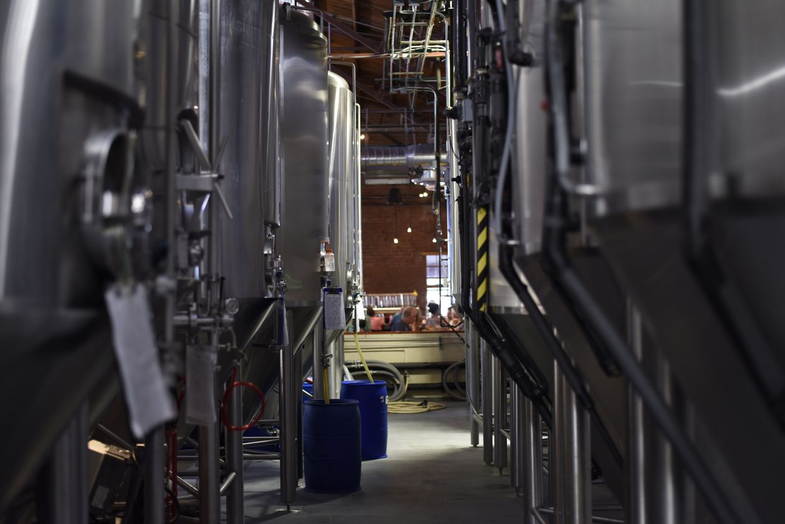
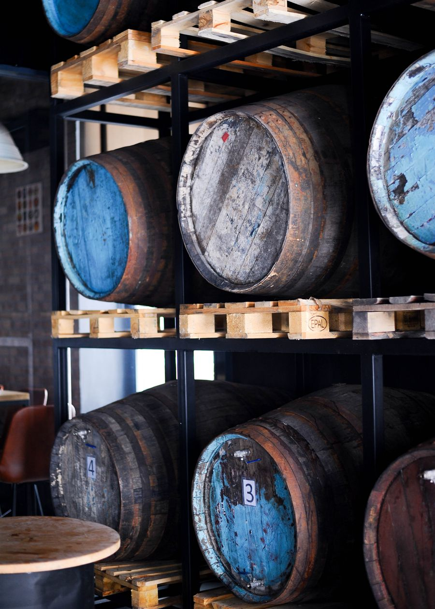

The Brewer · Sam Whitaker
Twenty years of cellars, then a plant of my own.
I started as a cellarman at nineteen, in a tied house where the cellar book was kept in pencil and argued about weekly. Twenty years followed in other people's pubs — cellars flooded, cellars frozen, one memorable cellar shared with a boiler that had opinions — before I bought the Copper Firkin in 2019 and put a five-barrel plant in the back in 2021.
The training is the ordinary, checkable kind: a general certificate in brewing, a cellar-management certificate, and two decades of gravity readings. Nothing on this page is a medal. What I sell is not genius; it is a book kept properly — gravities measured twice a day while a beer ferments, losses written down instead of rounded away, and a cellar held at the temperature cask ale asks for.
The pub brews five ales, sells them across its own bar, and sends firkins to a short list of trade customers within fifteen miles. That is the whole business, and it fits on one brew sheet — which is rather the point.

How a brew runs
Brew day to bar in about three weeks. Every stage leaves a number in the book.
- Brew day.
Mash, sparge, boil, cool. The original gravity is read from the cooled wort and written on the sheet before the yeast goes in — that reading, not the recipe's intention, is the start of the beer's record.
- Fermentation, five to seven days.
Gravity is read morning and evening and plotted. When the reading holds steady at the final gravity for two days, the beer is done — and the FG goes on the sheet, which is when the strength can finally be computed: (OG − FG) × 131.25.
- Racking.
The beer is racked into firkins with finings, and the count is the count: gross pints, minus the printed loss percentage for trub, yeast crop and racking, divided by 72, rounded down. What does not fill a firkin is not sold as one.
- The cellar.
Firkins rest on the stillage at 11–13 °C to condition — a week for most, longer for the porter, six weeks for Old Stillage. Nothing is tapped before its time because the diary is impatient.
- Venting and tapping.
A cask is vented with a soft peg to let the condition settle, hard-pegged overnight, then tapped. From that moment the clock runs: three days to be drunk in condition, and the book says which day each cask is on.
Cellar discipline
Cask ale is live beer — it is still working in the cask. The cellar's job is to not get in its way.
- Temperature, held
- The cellar is held at 11–13 °C year-round and the thermometer is read and logged twice a day — the same readings quoted in the festival record. Warm cellars make tired beer; no heater has ever been pointed at a cask to “hurry it up”.
- Stillage, and stillness
- A cask on the stillage is not moved, rolled or “checked” by shaking. Sediment settles once, in one direction. If a cask has to move, it stands a full day before it is tapped.
- The three-day window
- Once a cask is vented and tapped, air is getting at the beer. Three days is this house's limit for selling it as the beer it was brewed to be. Day four's pint might be drinkable; it is not the same beer, so it is not sold as it.
- Lines cleaned weekly
- Every line is cleaned on the same weekday, logged in the book, and the first pull after cleaning is tasted by whoever cleaned it. A clean line is invisible in the glass, which is exactly the compliment it wants.

The honesty page
Four statements the house is prepared to be held to.
- Strength is measured, not targeted
- A recipe aims at a gravity; a beer reaches one. The ABV on every pump clip and every page of this site is computed from the gravities the batch actually recorded. If a batch of the bitter fermented out to 4.1% instead of 3.9%, the clip would say 4.1% — the formula does not negotiate.
- Losses are real, and printed
- Between the copper and the glass, a brew loses 7–10% to trub, yeast, racking and the part-firkin that cannot be sold. Those percentages are on the brew sheet because a yield that ignores them is a story, not a number.
- No health claims, ever
- Beer is not a health product and nothing here will describe it as one — no “natural goodness”, no antioxidants, no moderation miracles. It is an alcoholic drink, made carefully and measured honestly, for adults who choose it.
- When it is wrong, it is dumped
- The record of the pale ale poured away in June 2026 is in the cellar records, with its cost. A pub that only publishes its successes is doing marketing. A cellar book does bookkeeping.
Terms, plainly
- Trade accounts
- Firkins at the Table 1 trade prices, delivered Thursdays within 15 miles. Invoices at 14 days. First order carries a £50-per-firkin cask deposit, returned as empties come back. If a cask arrives at your cellar wrong, it is replaced or credited — tell us before it is vented, not after.
- Event casks
- Trade price for the beer + £25 stillage and dispense hire + £50 refundable deposit. Seven days' notice, so the cask can be delivered settled and vented on site. Collection and return by arrangement within 15 miles.
- Brewery visits
- Small groups (up to ten) on a brew morning, by arrangement, £12 a head, over-18s. You will see the sheet, the fermenters and the cellar — and be shown the loss column along with everything else.
- Cancellations
- Event casks cancelled 5+ days out: deposit returned in full. Inside 5 days the beer has been racked and settled for you, so the beer is charged and the deposit still returned — a firkin keeps for its window and can usually be redirected to the bar.